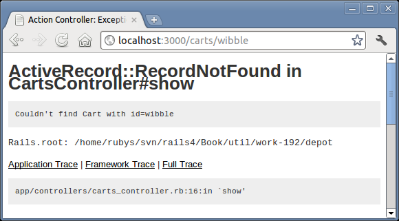
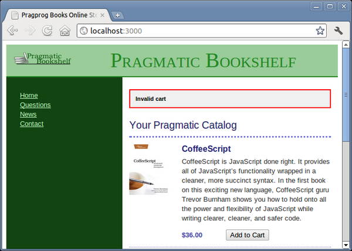

Looking at the page displayed in , it’s apparent that our application raised an exception at line 16 of the carts controller.[26] That turns out to be this line:
@cart = Cart.find(params[:id]) |
If the cart cannot be found, Active Record raises a RecordNotFound exception, which we clearly need to handle. The question arises—how?
|  |
|
Figure 16. Our application spills its guts. |
We could just silently ignore it. From a security standpoint, this is probably the best move, because it gives no information to a potential attacker. However, it also means that should we ever have a bug in our code that generates bad cart ids, our application will appear to the outside world to be unresponsive—no one will know there has been an error.
Instead, we’ll take two actions when an exception is raised. First, we’ll log the fact to an internal log file using Rails’ logger facility.[27] Second, we’ll redisplay the catalog page, along with a short message to the user (something along the lines of “Invalid cart”) so they can continue to use our site.
Rails has a convenient way of dealing with errors and error reporting. It defines a structure called a flash. A flash is a bucket (actually closer to a Hash) in which you can store stuff as you process a request. The contents of the flash are available to the next request in this session before being deleted automatically. Typically the flash is used to collect error messages. For example, when our show method detects that it was passed an invalid cart id, it can store that error message in the flash area and redirect to the index action to redisplay the catalog. The view for the index action can extract the error and display it at the top of the catalog page. The flash information is accessible within the views by using the flash accessor method.
Why couldn’t we just store the error in any old instance variable? Remember that after a redirect is sent by our application to the browser, the browser sends a new request back to our application. By the time we receive that request, our application has moved on—all the instance variables from previous requests are long gone. The flash data is stored in the session in order to make it available between requests.
Armed with all this background about flash data, we can now change our show method to intercept bad cart ids and report on the problem:
| rails31/depot_h/app/controllers/carts_controller.rb | |
# GET /carts/1 |
|
# GET /carts/1.json |
|
def show |
|
| * | begin |
@cart = Cart.find(params[:id]) |
|
| * | rescue ActiveRecord::RecordNotFound |
| * | logger.error "Attempt to access invalid cart #{params[:id]}" |
| * | redirect_to store_url, notice: 'Invalid cart' |
| * | else |
respond_to do |format| |
|
format.html # show.html.erb |
|
format.json { render json: @cart } |
|
end |
|
| * | end |
end |
|
The rescue clause intercepts the exception raised by Cart.find. In the handler, we do the following:
Use the Rails logger to record the error. Every controller has a logger attribute. Here we use it to record a message at the error logging level.
Redirect to the catalog display using the redirect_to method. The :notice parameter specifies a message to be stored in the flash as a notice. Why redirect, rather than just display the catalog, here? If we redirect, the user’s browser will end up displaying the store URL, rather than http://.../cart/wibble. We expose less of the application this way. We also prevent the user from retriggering the error by hitting the Reload button.
With this code in place, we can rerun our customer’s problematic query. This time, when we enter the following URL:
http://localhost:3000/carts/wibble |
we don’t see a bunch of errors in the browser. Instead, the catalog page is displayed. If we look at the end of the log file (development.log in the log directory), we’ll see our message:
Started GET "/carts/wibble" for 127.0.0.1 at 2011-05-27 12:16:28 -0400 |
|
Processing by CartsController#show as HTML |
|
Parameters: {"id"=>"wibble"} |
|
^[[1m^[[35mCart Load (0.1ms)^[[0m SELECT "carts".* FROM "carts" WHERE |
|
"carts"."id" = ? LIMIT 1 [["id", "wibble"]] |
|
| * | Attempt to access invalid cart wibble |
Redirected to http://localhost:3000/ |
|
Completed 302 Found in 3ms |
For a much more user-friendly result, see Figure 17, Much more user-oriented error message.
|  |
|
Figure 17. Much more user-oriented error message |
On Unix machines, we’d probably use a command such as tail or less to view this file. On Windows, you could use your favorite editor. It’s often a good idea to keep a window open showing new lines as they are added to this file. In Unix you’d use tail -f. You can download a tail command for Windows from http://gnuwin32.sourceforge.net/packages/coreutils.htm or get a GUI-based tool from http://tailforwin32.sourceforge.net/. Finally, some OS X users use Console.app to track log files. Just say open name.log at the command line.
Sensing the end of an iteration, we call our customer over and show her that the error is now properly handled. She’s delighted and continues to play with the application. She notices a minor problem on our new cart display—there’s no way to empty items out of a cart. This minor change will be our next iteration. We should make it before heading home.